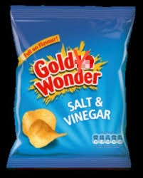

OTHER MATERIAL USED IN ADVERTISEMENT:
other advertise material like hordings , banners are used for local level advertisement.
hordings ar used at road sides and on many shops who are intrested in advertising goldy company
banners are used on bus cars ,shops etc and at those places where banners are easily pasted.
advertisement is also given into newspaper .like in local news paper and international news papers.
